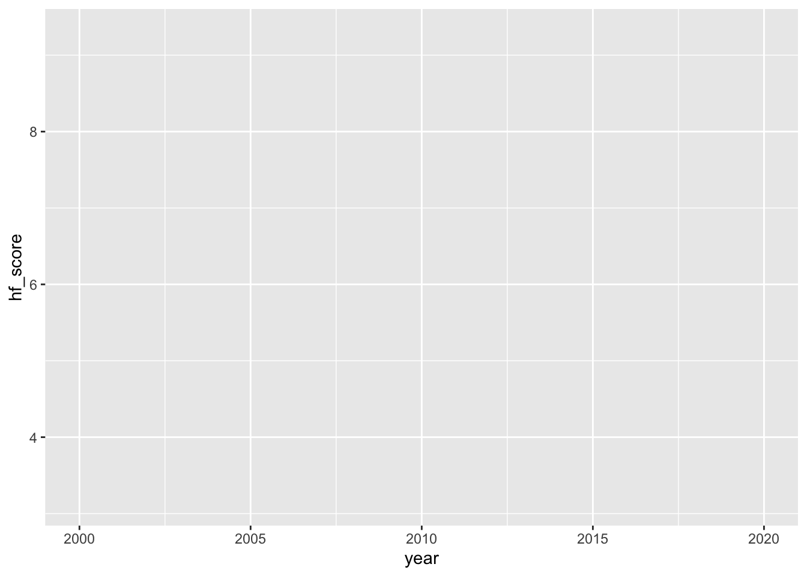
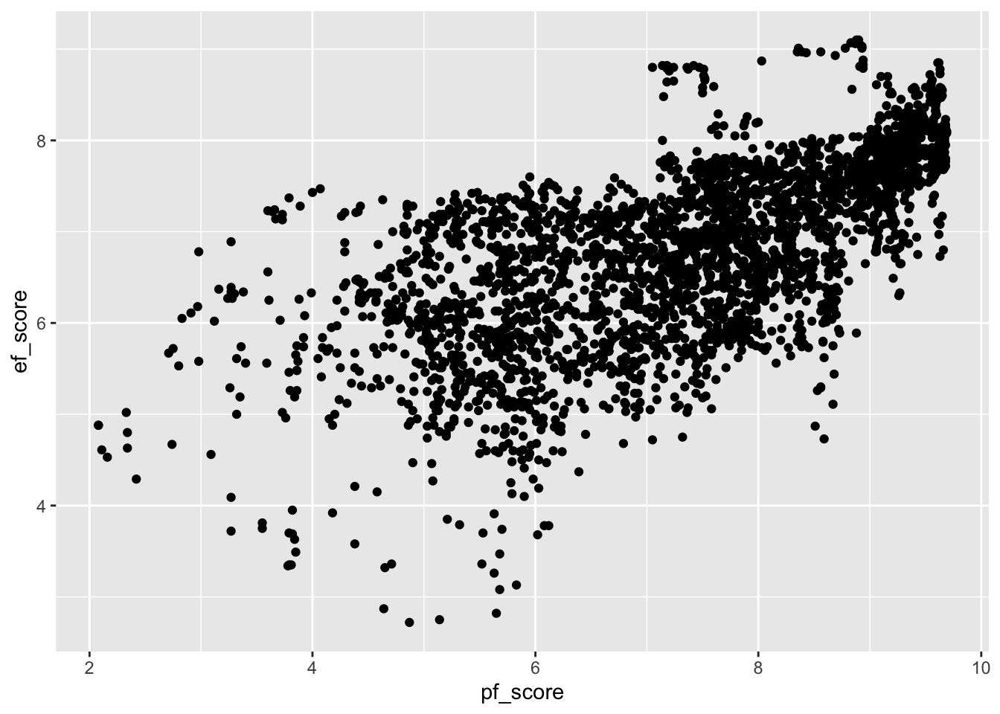
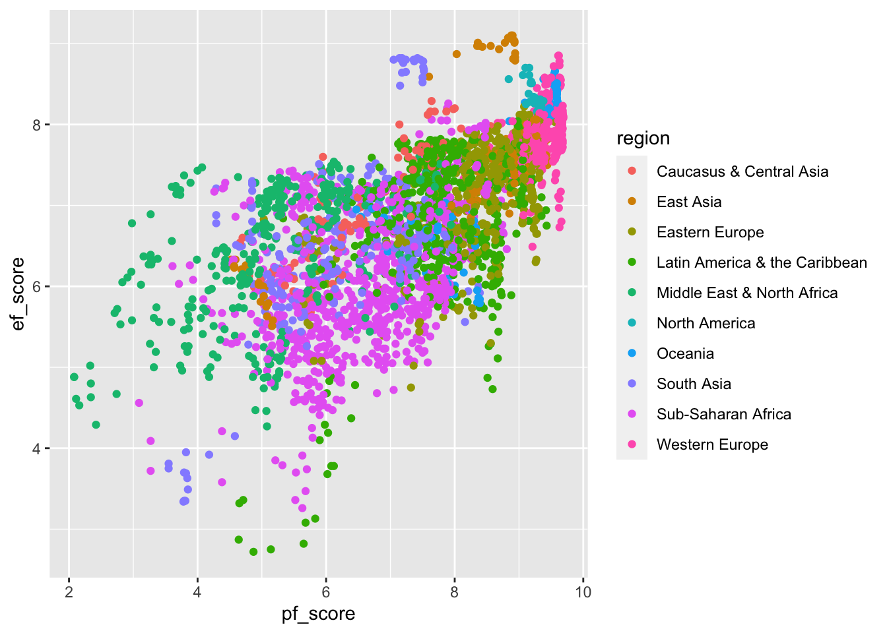
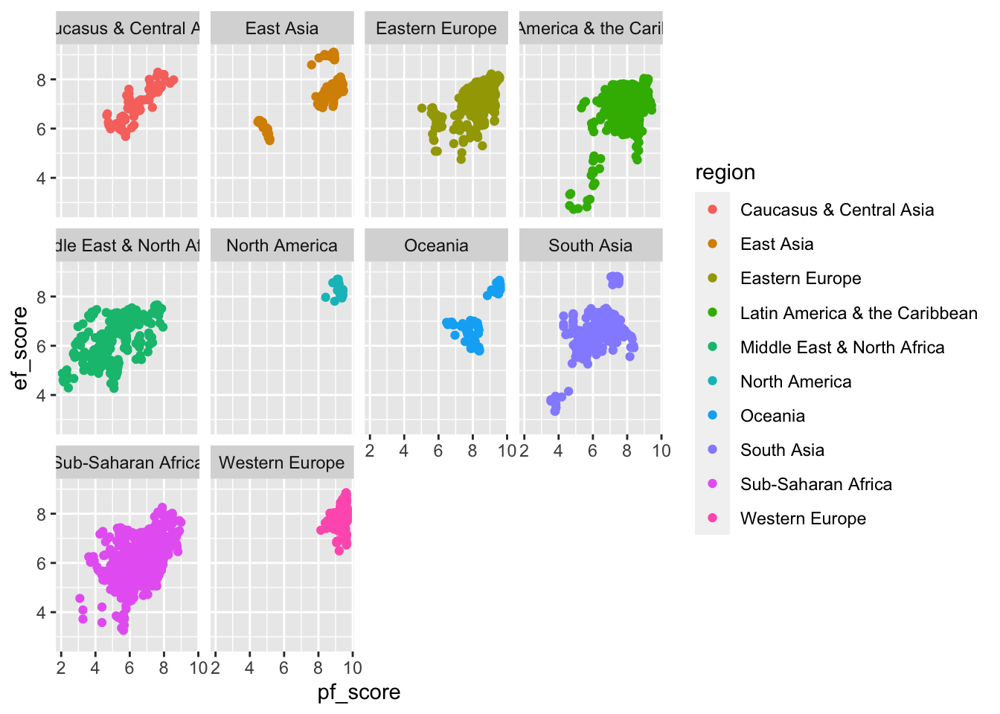

library(here)here() starts at /Users/luca/PowerFolders/Hiwi_Arbeit/DPPD/WoMepS_DataVizRlibrary(tidyverse)── Attaching packages ─────────────────────────────────────── tidyverse 1.3.2
──✔ ggplot2 3.4.1 ✔ purrr 1.0.1
✔ tibble 3.2.1 ✔ dplyr 1.1.1.9000
✔ tidyr 1.3.0 ✔ stringr 1.5.0
✔ readr 2.1.3 ✔ forcats 0.5.2
── Conflicts ────────────────────────────────────────── tidyverse_conflicts() ──
✖ dplyr::filter() masks stats::filter()
✖ dplyr::lag() masks stats::lag()data_hfi <- read_csv(here("data/HFI/human-freedom-index-2022.csv"))Rows: 3465 Columns: 141
── Column specification ────────────────────────────────────────────────────────
Delimiter: ","
chr (4): countries, region, ef_government_tax_income_data, ef_government_t...
dbl (137): year, hf_score, hf_rank, hf_quartile, pf_rol_procedural, pf_rol_c...
ℹ Use `spec()` to retrieve the full column specification for this data.
ℹ Specify the column types or set `show_col_types = FALSE` to quiet this message.ggplot(
data = data_hfi,
)
ggplot(
data = data_hfi,
mapping = aes(x = year, y = hf_score)
)
ggplot(
data = data_hfi,
mapping = aes(x = pf_score, y = ef_score)
) +
geom_point()Warning: Removed 382 rows containing missing values (`geom_point()`).
ggplot(
data = data_hfi,
mapping = aes(x = pf_score, y = ef_score, color = region)
) +
geom_point()Warning: Removed 382 rows containing missing values (`geom_point()`).
ggplot(
data = data_hfi,
mapping = aes(x = pf_score, y = ef_score, color = region)
) +
geom_point() +
facet_wrap(~region)Warning: Removed 382 rows containing missing values (`geom_point()`).